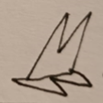

Matějův web

- Slovo celer pochází z latinského cella, neboli sklep — celery se totiž nejlépe uchovávaly ve sklepích. Sklepník je cellarius, tedy ten, kdo nosí celery.
- Daniel Greysolon, obchodník s kožečinami přísahal, že v místě dnešního Duluthu postaví první osídlení, což se mu r.1679 podařilo. S ohledem na to, že si tehdy každý stavěl kde chtěl a co chtěl, byla přísaha považována za nudnou a hloupou, ranč byl pojmenován Dull-oath, z toho pozdější Duluth.